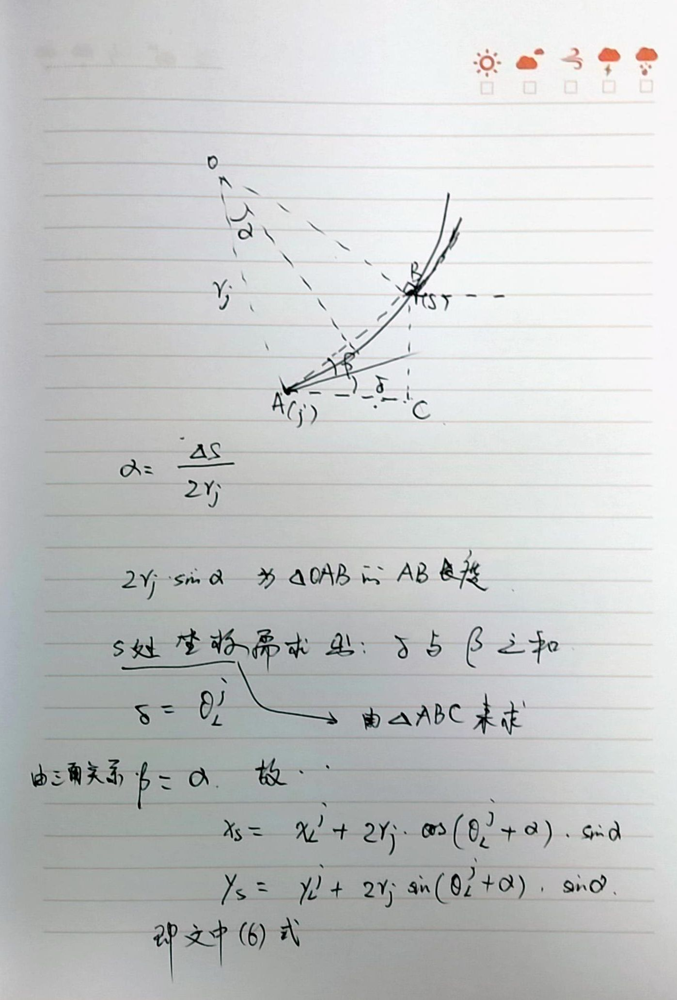

Clothoid Approximation
圆弧插值
设basic clothoid上分布着多个点, 第 j 个圆弧穿过第 j 个与 j+1 个点. 它的半径由下式确定:
\begin{equation*}
r_j = \kappa^{-1} = (\sigma (j+0.5) \Delta s)^{-1}
\end{equation*}
文中提到 \(\Delta s\) 是 sampling interval, 那么 \((j+0.5) \Delta s\) 表示从起点开始到点 \(j+0.5\) 的总长度, 可以判断文中采用的是 uniform sampling, 即 \(\Delta s\) 是个定值.
从一个 basic clothoid 得到任意长度 s 处坐标的推导过程是这样的:

即:
\begin{equation*}
x(s)=x_j + 2 r_j \cos \left(\theta_j + \frac{\Delta s}{2 r_j}\right) \sin \frac{\Delta s}{2 r_j}
\end{equation*}
\begin{equation*}
y(s)=y_j + 2 r_j \sin \left(\theta_j + \frac{\Delta s}{2 r_j}\right) \sin \frac{\Delta s}{2 r_j}
\end{equation*}
误差估计:
固定 \(\sigma=1\), 然后 compare interpolation error for 3 values of sampling interval \(\Delta s\), 也就是说只比较区间里的3个对应值的误差. 在作出误差图后总结到, 因为clothoid被划分为很多小段, 最大误差就出现在第一段的末端点, 即 \(j=0\). 此时, \(r_j=2(\sigma \Delta s)\), 且 \(\theta_j=0, \Delta s=\Delta s_L\) (即为该段长度), 代入到上面的表达式求 \(x(s), y(s)\), 后面根据clothoid表达式特点推导出最大误差与 \(\Delta s, \sigma\) 的关系, 即文中式(8).
Comments
Comments powered by Disqus